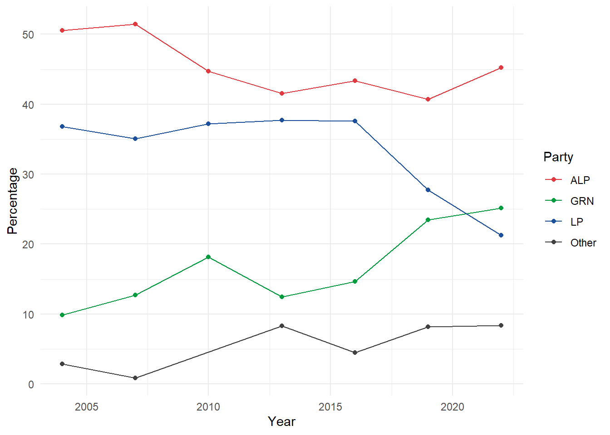
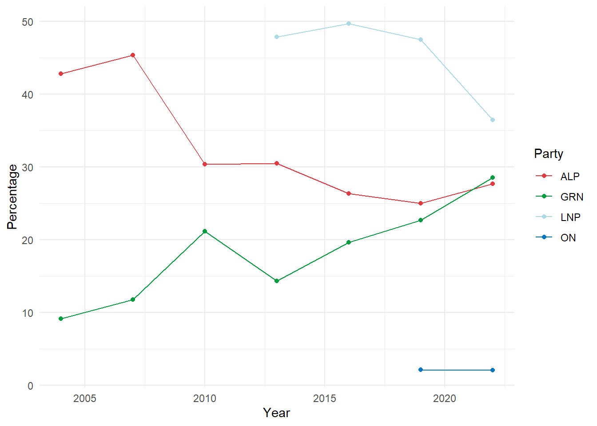
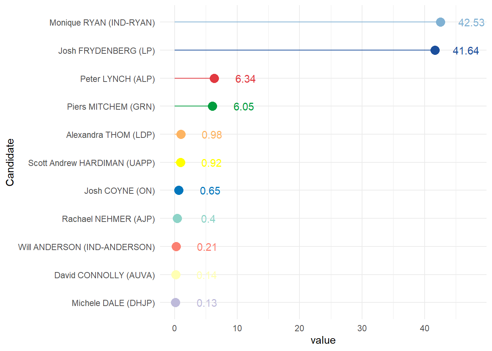

Chapter 10 (APPENDIX) {auspol} Vignette
Extracted from https://gh.carlosyanez.id.au/auspol/articles/house_primary_vote.html on Sunday 22 January 2023
auspol includes two functions to interact with the preference distribution data:
- get_house_primary_vote()
- house_primary_vote_summary()
- house_primary_comparison_plot()
- house_primary_historic_plot()
10.1 What is this?
If you are unfamiliar with the Australian electoral system and preferential voting, please look at this [explainer(https://www.aec.gov.au/learn/preferential-voting.html) before proceeding.
10.2 Getting the data
get_house_primary_vote() is the basic function to retrieve primary vote data published by the AEC. Without any arguments, it will deliver all the results for all elections, but it comes with parameters to facilitate filtering. For instance, to get the results for Brisbane for 2022:
get_house_primary_vote(division="Brisbane",year=2022)## # A tibble: 344 x 17
## Year StateAb DivisionID DivisionNm PollingPlaceID Polling~1 Candi~2 Surname GivenNm Ballo~3 Elected Histo~4 PartyAb PartyNm Ordin~5 Swing Sitti~6
## <dbl> <chr> <int> <chr> <int> <chr> <int> <chr> <chr> <int> <lgl> <lgl> <chr> <chr> <int> <dbl> <lgl>
## 1 2022 QLD 156 Brisbane 83397 Alderley 37204 KENNEDY Tiana 1 FALSE FALSE AJP Animal~ 23 2.31 FALSE
## 2 2022 QLD 156 Brisbane 83397 Alderley 35972 KNUDSON Justin~ 2 FALSE FALSE UAPP United~ 25 0.77 FALSE
## 3 2022 QLD 156 Brisbane 83397 Alderley 37338 BATES Stephen 3 TRUE FALSE GRN Queens~ 251 3.43 FALSE
## 4 2022 QLD 156 Brisbane 83397 Alderley 37230 JARRETT Madonna 4 FALSE FALSE ALP Austra~ 315 1.27 FALSE
## 5 2022 QLD 156 Brisbane 83397 Alderley 37482 EVANS Trevor 5 FALSE TRUE LNP Libera~ 328 -9.97 FALSE
## 6 2022 QLD 156 Brisbane 83397 Alderley 38213 HOLD Trevor 6 FALSE FALSE ON Paulin~ 31 1.5 FALSE
## 7 2022 QLD 156 Brisbane 83397 Alderley 37311 BULL Anthony 7 FALSE FALSE LDP Libera~ 22 2.21 FALSE
## 8 2022 QLD 156 Brisbane 83397 Alderley 999 Inform~ Inform~ 999 FALSE FALSE Inform~ Inform~ 20 -1.17 FALSE
## 9 2022 QLD 156 Brisbane 6017 Ascot 37204 KENNEDY Tiana 1 FALSE FALSE AJP Animal~ 35 1.65 FALSE
## 10 2022 QLD 156 Brisbane 6017 Ascot 35972 KNUDSON Justin~ 2 FALSE FALSE UAPP United~ 62 2.06 FALSE
## # ... with 334 more rows, and abbreviated variable names 1: PollingPlace, 2: CandidateID, 3: BallotPosition, 4: HistoricElected, 5: OrdinaryVotes,
## # 6: SittingMemberFlBoth parameters can include more than one value, e.g.
get_house_primary_vote(division="Brisbane",year=c(2019,2022))## # A tibble: 712 x 17
## Year StateAb DivisionID DivisionNm PollingPlaceID Polling~1 Candi~2 Surname GivenNm Ballo~3 Elected Histo~4 PartyAb PartyNm Ordin~5 Swing Sitti~6
## <dbl> <chr> <int> <chr> <int> <chr> <int> <chr> <chr> <int> <lgl> <lgl> <chr> <chr> <int> <dbl> <lgl>
## 1 2022 QLD 156 Brisbane 83397 Alderley 37204 KENNEDY Tiana 1 FALSE FALSE AJP Animal~ 23 2.31 FALSE
## 2 2022 QLD 156 Brisbane 83397 Alderley 35972 KNUDSON Justin~ 2 FALSE FALSE UAPP United~ 25 0.77 FALSE
## 3 2022 QLD 156 Brisbane 83397 Alderley 37338 BATES Stephen 3 TRUE FALSE GRN Queens~ 251 3.43 FALSE
## 4 2022 QLD 156 Brisbane 83397 Alderley 37230 JARRETT Madonna 4 FALSE FALSE ALP Austra~ 315 1.27 FALSE
## 5 2022 QLD 156 Brisbane 83397 Alderley 37482 EVANS Trevor 5 FALSE TRUE LNP Libera~ 328 -9.97 FALSE
## 6 2022 QLD 156 Brisbane 83397 Alderley 38213 HOLD Trevor 6 FALSE FALSE ON Paulin~ 31 1.5 FALSE
## 7 2022 QLD 156 Brisbane 83397 Alderley 37311 BULL Anthony 7 FALSE FALSE LDP Libera~ 22 2.21 FALSE
## 8 2022 QLD 156 Brisbane 83397 Alderley 999 Inform~ Inform~ 999 FALSE FALSE Inform~ Inform~ 20 -1.17 FALSE
## 9 2022 QLD 156 Brisbane 6017 Ascot 37204 KENNEDY Tiana 1 FALSE FALSE AJP Animal~ 35 1.65 FALSE
## 10 2022 QLD 156 Brisbane 6017 Ascot 35972 KNUDSON Justin~ 2 FALSE FALSE UAPP United~ 62 2.06 FALSE
## # ... with 702 more rows, and abbreviated variable names 1: PollingPlace, 2: CandidateID, 3: BallotPosition, 4: HistoricElected, 5: OrdinaryVotes,
## # 6: SittingMemberFlget_house_primary_vote(division=c("Brisbane","Perth"),year=c(2019,2022))## # A tibble: 1,783 x 17
## Year StateAb DivisionID DivisionNm PollingPlaceID Polling~1 Candi~2 Surname GivenNm Ballo~3 Elected Histo~4 PartyAb PartyNm Ordin~5 Swing Sitti~6
## <dbl> <chr> <int> <chr> <int> <chr> <int> <chr> <chr> <int> <lgl> <lgl> <chr> <chr> <int> <dbl> <lgl>
## 1 2022 QLD 156 Brisbane 83397 Alderley 37204 KENNEDY Tiana 1 FALSE FALSE AJP Animal~ 23 2.31 FALSE
## 2 2022 QLD 156 Brisbane 83397 Alderley 35972 KNUDSON Justin~ 2 FALSE FALSE UAPP United~ 25 0.77 FALSE
## 3 2022 QLD 156 Brisbane 83397 Alderley 37338 BATES Stephen 3 TRUE FALSE GRN Queens~ 251 3.43 FALSE
## 4 2022 QLD 156 Brisbane 83397 Alderley 37230 JARRETT Madonna 4 FALSE FALSE ALP Austra~ 315 1.27 FALSE
## 5 2022 QLD 156 Brisbane 83397 Alderley 37482 EVANS Trevor 5 FALSE TRUE LNP Libera~ 328 -9.97 FALSE
## 6 2022 QLD 156 Brisbane 83397 Alderley 38213 HOLD Trevor 6 FALSE FALSE ON Paulin~ 31 1.5 FALSE
## 7 2022 QLD 156 Brisbane 83397 Alderley 37311 BULL Anthony 7 FALSE FALSE LDP Libera~ 22 2.21 FALSE
## 8 2022 QLD 156 Brisbane 83397 Alderley 999 Inform~ Inform~ 999 FALSE FALSE Inform~ Inform~ 20 -1.17 FALSE
## 9 2022 QLD 156 Brisbane 6017 Ascot 37204 KENNEDY Tiana 1 FALSE FALSE AJP Animal~ 35 1.65 FALSE
## 10 2022 QLD 156 Brisbane 6017 Ascot 35972 KNUDSON Justin~ 2 FALSE FALSE UAPP United~ 62 2.06 FALSE
## # ... with 1,773 more rows, and abbreviated variable names 1: PollingPlace, 2: CandidateID, 3: BallotPosition, 4: HistoricElected, 5: OrdinaryVotes,
## # 6: SittingMemberFlBy default, the results are presented by polling place, with the possibility to aggregate them.
get_house_primary_vote(division=c("Brisbane","Perth"),year=c(2019,2022),aggregation = TRUE)## # A tibble: 37 x 14
## Year StateAb DivisionID DivisionNm CandidateID Surname GivenNm BallotPosition Elected HistoricElected PartyAb PartyNm Sitti~1 Ordin~2
## <dbl> <chr> <int> <chr> <int> <chr> <chr> <int> <lgl> <lgl> <chr> <chr> <lgl> <int>
## 1 2019 QLD 156 Brisbane 999 Informal Informal 999 FALSE FALSE Informal Informal FALSE 1999
## 2 2019 QLD 156 Brisbane 32751 PERRY Anne 1 FALSE FALSE ON Pauline Hanson~ FALSE 1641
## 3 2019 QLD 156 Brisbane 32946 NEWBURY Paul 6 FALSE FALSE ALP Australian Lab~ FALSE 19018
## 4 2019 QLD 156 Brisbane 32960 WHITTAKER Aaron 3 FALSE FALSE UAPP United Austral~ FALSE 975
## 5 2019 QLD 156 Brisbane 33144 BARTLETT Andrew 4 FALSE FALSE GRN The Greens FALSE 17247
## 6 2019 QLD 156 Brisbane 33206 EVANS Trevor 2 TRUE TRUE LNP Liberal Nation~ FALSE 36119
## 7 2019 QLD 156 Brisbane 33224 EMANUEL Kamala 7 FALSE FALSE SAL Socialist Alli~ FALSE 528
## 8 2019 QLD 156 Brisbane 33326 JEANNERET Rod 5 FALSE FALSE FACN FRASER ANNING'~ FALSE 526
## 9 2019 WA 245 Perth 999 Informal Informal 999 FALSE FALSE Informal Informal FALSE 3548
## 10 2019 WA 245 Perth 32155 PERKS Caroline 6 FALSE FALSE GRN The Greens (WA) FALSE 13234
## # ... with 27 more rows, and abbreviated variable names 1: SittingMemberFl, 2: OrdinaryVotesget_house_primary_vote(division=c("Brisbane","Perth"),year=c(2019,2022), polling_places = c("Yokine North"))## # A tibble: 12 x 17
## Year StateAb DivisionID DivisionNm PollingPlaceID Pollin~1 Candi~2 Surname GivenNm Ballo~3 Elected Histo~4 PartyAb PartyNm Ordin~5 Swing Sitti~6
## <dbl> <chr> <int> <chr> <int> <chr> <int> <chr> <chr> <int> <lgl> <lgl> <chr> <chr> <int> <dbl> <lgl>
## 1 2022 WA 245 Perth 8203 Yokine ~ 37417 BAILEY Cameron 1 FALSE FALSE ON Paulin~ 25 -0.97 FALSE
## 2 2022 WA 245 Perth 8203 Yokine ~ 36515 POWELL Dean 2 FALSE FALSE AUC Austra~ 18 0.2 FALSE
## 3 2022 WA 245 Perth 8203 Yokine ~ 37748 CONNOR Sean 3 FALSE FALSE GAP The Gr~ 14 1.54 FALSE
## 4 2022 WA 245 Perth 8203 Yokine ~ 37803 VOS Dave 4 FALSE FALSE WAP WESTER~ 18 -0.19 FALSE
## 5 2022 WA 245 Perth 8203 Yokine ~ 37233 SZMEKU~ Sarah 5 FALSE FALSE AJP Animal~ 14 1.54 FALSE
## 6 2022 WA 245 Perth 8203 Yokine ~ 37327 GORMAN Patrick 6 TRUE TRUE ALP Austra~ 341 7.73 FALSE
## 7 2022 WA 245 Perth 8203 Yokine ~ 37273 NICKOLS Evan 7 FALSE FALSE LDP Libera~ 18 1.98 FALSE
## 8 2022 WA 245 Perth 8203 Yokine ~ 36507 EBERHA~ Sonya ~ 8 FALSE FALSE UAPP United~ 23 1.21 FALSE
## 9 2022 WA 245 Perth 8203 Yokine ~ 36628 PERKS Caroli~ 9 FALSE FALSE GRN The Gr~ 138 2.23 FALSE
## 10 2022 WA 245 Perth 8203 Yokine ~ 36601 DWYER David 10 FALSE FALSE LP Liberal 298 -15.7 FALSE
## 11 2022 WA 245 Perth 8203 Yokine ~ 37290 GYURU Aiden 11 FALSE FALSE CYA Austra~ 4 0.44 FALSE
## 12 2022 WA 245 Perth 8203 Yokine ~ 999 Inform~ Inform~ 999 FALSE FALSE Inform~ Inform~ 80 2.8 FALSE
## # ... with abbreviated variable names 1: PollingPlace, 2: CandidateID, 3: BallotPosition, 4: HistoricElected, 5: OrdinaryVotes, 6: SittingMemberFlIt is also possible to restrict the results to selected polling places
Additionally, it is possible to select one or more states instead of a group of divisions, e.g.:
get_house_primary_vote(state=c("TAS"),year=c(2019,2022),aggregation = TRUE)## # A tibble: 86 x 14
## Year StateAb DivisionID DivisionNm CandidateID Surname GivenNm BallotPosition Elected HistoricElected PartyAb PartyNm Sitti~1 Ordin~2
## <dbl> <chr> <int> <chr> <int> <chr> <chr> <int> <lgl> <lgl> <chr> <chr> <lgl> <int>
## 1 2019 TAS 192 Bass 999 Informal Informal 999 FALSE FALSE Informal Informal FALSE 2962
## 2 2019 TAS 192 Bass 32124 ARCHER Bridget 4 TRUE FALSE LP Liberal FALSE 25401
## 3 2019 TAS 192 Bass 32327 HART Ross 2 FALSE TRUE ALP Australian La~ FALSE 20882
## 4 2019 TAS 192 Bass 32379 WOODBURY Susan 3 FALSE FALSE AJP Animal Justic~ FALSE 1422
## 5 2019 TAS 192 Bass 32399 COOPER Carl 7 FALSE FALSE NP The Nationals FALSE 783
## 6 2019 TAS 192 Bass 32540 HALL Tom 1 FALSE FALSE GRN The Greens FALSE 6198
## 7 2019 TAS 192 Bass 32545 ROARK Allan John 6 FALSE FALSE UAPP United Austra~ FALSE 2891
## 8 2019 TAS 192 Bass 33590 LAMBERT Todd 5 FALSE FALSE IND Independent FALSE 2229
## 9 2019 TAS 193 Braddon 999 Informal Informal 999 FALSE FALSE Informal Informal FALSE 5023
## 10 2019 TAS 193 Braddon 32094 BRAKEY Craig 2 FALSE FALSE IND Independent FALSE 7046
## # ... with 76 more rows, and abbreviated variable names 1: SittingMemberFl, 2: OrdinaryVotesIt is also possible to filter results by one or more parties:
get_house_primary_vote(state=c("NT"),year=c(2019,2022),aggregation = TRUE, party_abb=c("ALP","CLP"))## # A tibble: 8 x 14
## Year StateAb DivisionID DivisionNm CandidateID Surname GivenNm BallotPosition Elected HistoricElected PartyAb PartyNm Sitti~1 Ordin~2
## <dbl> <chr> <int> <chr> <int> <chr> <chr> <int> <lgl> <lgl> <chr> <chr> <lgl> <int>
## 1 2019 NT 306 Lingiari 32740 SNOWDON Warren 1 TRUE TRUE ALP Australian Lab~ FALSE 20125
## 2 2019 NT 306 Lingiari 33045 PRICE Jacinta 6 FALSE FALSE CLP Country Libera~ FALSE 15918
## 3 2019 NT 307 Solomon 32743 GOSLING Luke John 1 TRUE TRUE ALP Australian Lab~ FALSE 19484
## 4 2019 NT 307 Solomon 33053 GANLEY Kathy 3 FALSE FALSE CLP Country Libera~ FALSE 18297
## 5 2022 NT 306 Lingiari 36968 RYAN Damien 1 FALSE FALSE CLP NT CLP FALSE 13974
## 6 2022 NT 306 Lingiari 37286 SCRYMGOUR Marion 5 TRUE FALSE ALP A.L.P. FALSE 15367
## 7 2022 NT 307 Solomon 36937 MACFARLANE Tina 4 FALSE FALSE CLP NT CLP FALSE 11989
## 8 2022 NT 307 Solomon 37280 GOSLING Luke 3 TRUE TRUE ALP A.L.P. FALSE 18891
## # ... with abbreviated variable names 1: SittingMemberFl, 2: OrdinaryVoteshouse_primary_vote_summary() builds on the basic function and summarises data .
house_primary_vote_summary(division = "Brisbane", year=2022)## # A tibble: 8 x 11
## Year StateAb DivisionNm PartyAb PartyNm OrdinaryVotes GivenNm Surname Percentage_with_Informal Percen~1 Elected
## <dbl> <chr> <chr> <chr> <chr> <int> <chr> <chr> <dbl> <dbl> <lgl>
## 1 2022 QLD Brisbane AJP Animal Justice Party 1235 Tiana KENNEDY 1.65 1.68 FALSE
## 2 2022 QLD Brisbane ALP Australian Labor Party 20346 Madonna JARRETT 27.1 27.7 FALSE
## 3 2022 QLD Brisbane GRN Queensland Greens 20985 Stephen BATES 28.0 28.6 TRUE
## 4 2022 QLD Brisbane Informal Informal 1566 Informal Informal 2.09 2.13 FALSE
## 5 2022 QLD Brisbane LDP Liberal Democrats 1115 Anthony BULL 1.49 1.52 FALSE
## 6 2022 QLD Brisbane LNP Liberal National Party of Queensland 26801 Trevor EVANS 35.7 36.5 FALSE
## 7 2022 QLD Brisbane ON Pauline Hanson's One Nation 1518 Trevor HOLD 2.02 2.07 FALSE
## 8 2022 QLD Brisbane UAPP United Australia Party 1430 Justin Marc KNUDSON 1.91 1.95 FALSE
## # ... with abbreviated variable name 1: PercentageUsing the previous filters, it is possible to get ad-hoc summaries, for instance - all the ALP votes in Queensland in 2022, or the historic Liberal vote in Franklin.
house_primary_vote_summary(state = "QLD", year=2022,parties="ALP")## # A tibble: 30 x 11
## Year StateAb DivisionNm PartyAb PartyNm OrdinaryVotes GivenNm Surname Percentage_with_Informal Percentage Elected
## <dbl> <chr> <chr> <chr> <chr> <int> <chr> <chr> <dbl> <dbl> <lgl>
## 1 2022 QLD Blair ALP Australian Labor Party 27323 Shayne NEUMANN 33.4 35.5 TRUE
## 2 2022 QLD Bonner ALP Australian Labor Party 20930 Tabatha YOUNG 29.3 30.0 FALSE
## 3 2022 QLD Bowman ALP Australian Labor Party 23196 Donisha DUFF 28.7 29.6 FALSE
## 4 2022 QLD Brisbane ALP Australian Labor Party 20346 Madonna JARRETT 27.1 27.7 FALSE
## 5 2022 QLD Capricornia ALP Australian Labor Party 20543 Russell ROBERTSON 26.9 28.7 FALSE
## 6 2022 QLD Dawson ALP Australian Labor Party 18921 Shane HAMILTON 23.8 24.9 FALSE
## 7 2022 QLD Dickson ALP Australian Labor Party 22988 Ali FRANCE 31.0 32.3 FALSE
## 8 2022 QLD Fadden ALP Australian Labor Party 18140 Letitia DEL FABBRO 21.7 22.8 FALSE
## 9 2022 QLD Fairfax ALP Australian Labor Party 18001 Sue FERGUSON 21.0 22.3 FALSE
## 10 2022 QLD Fisher ALP Australian Labor Party 19804 Judene ANDREWS 22.9 23.7 FALSE
## # ... with 20 more rowshouse_primary_vote_summary(division="Franklin",parties="LP")## # A tibble: 7 x 11
## Year StateAb DivisionNm PartyAb PartyNm OrdinaryVotes GivenNm Surname Percentage_with_Informal Percentage Elected
## <dbl> <chr> <chr> <chr> <chr> <int> <chr> <chr> <dbl> <dbl> <lgl>
## 1 2004 TAS Franklin LP Liberal 21337 Henry FINNIS 37.6 39.0 FALSE
## 2 2007 TAS Franklin LP Liberal 22616 Vanessa GOODWIN 39.8 41.0 FALSE
## 3 2010 TAS Franklin LP Liberal 18386 Jane HOWLETT 32.0 33.3 FALSE
## 4 2013 TAS Franklin LP Liberal 21867 Bernadette BLACK 37.1 38.7 FALSE
## 5 2016 TAS Franklin LP Liberal 20754 Amanda-Sue MARKHAM 33.9 35.1 FALSE
## 6 2019 TAS Franklin LP Liberal 18591 Dean YOUNG 29.9 30.9 FALSE
## 7 2022 TAS Franklin LP Liberal 14374 Kristy Maree JOHNSON 24.5 25.9 FALSE10.3 Plotting
10.3.1 Historic Trends
The first plotting convenience function in this package allows comparing the evolution of primary voting across time. This function relies on house_primary_summary and uses many of its options. Its first use is to represent party trends in one electorate:
house_primary_historic_plot("Canberra")As they can be many minor parties, it is sometimes useful just to focus on a number of parties. This function allows filtering by a number of parties or by filtering by the most voted in a certain year. In both cases, it is possible to consolidate others’ votes.
house_primary_historic_plot("Canberra", parties =3,
parties_year = 2022,
include_others = TRUE )
Finally, it is possible to aggregate party acronyms - sometimes the same party has changed named or registered differently
house_primary_historic_plot(division="Brisbane",parties=5,
merge_parties = list(LNP=c("LNP","LNQ","LP"),
ON=c("HAN","ON"))) 
10.4 Results for one election
This package also contains a convenience function to look at the primary vote results for one division. Lile the previous function, this also inherits many of the attributes of get_house_primary_vote.
house_primary_comparison_plot(division = "Kooyong", year=2022,individualise_IND = TRUE)
The plots can also be displayed using bars, as shown below
house_primary_comparison_plot(state="TAS",year=2022,parties=c("LP"),plot_format = "bar")